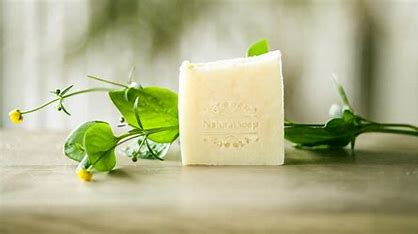
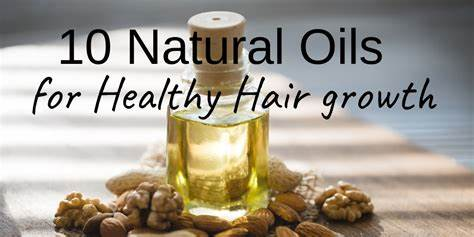

Less exposure to harmful chemicals A 2019 NPD survey found that around 46% of people who purchase facial skin care products choose options without: phthalates
More nutrients Natural face washes contain healthy ingredients that include plant extracts, which are good for the skin
Soap

Benifiets
Reduced Chemical Pollution One of the biggest benefits of natural soap making is the reduction of chemical pollution
Sustainable Ingredient Sourcing Many natural soap makers source ingredients from local or sustainable farms
Biodegradability Natural soap making ingredients, such as plant oils and essential oils, are biodegradable.
Hair Oil

Benifiets
Reduce protein loss (especially coconut oil).
Enhance shaft lubrication and prevent hair breakage.